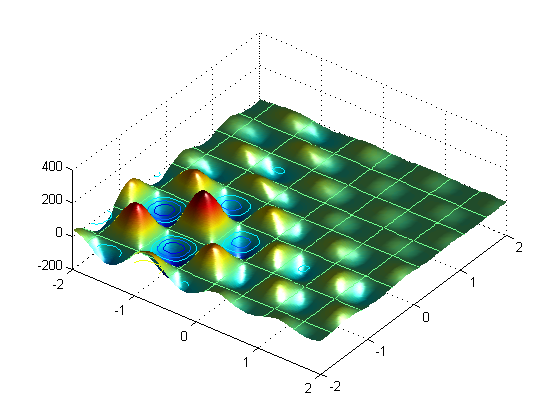
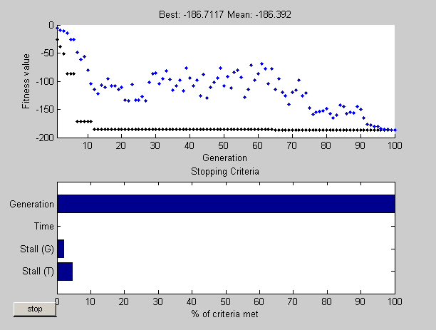
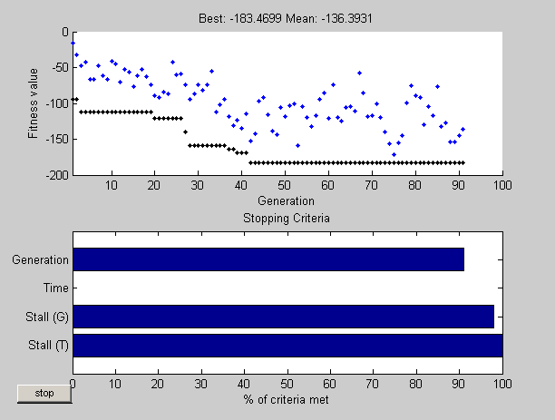
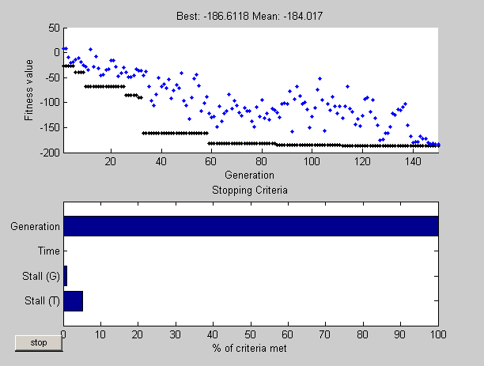

This is a demonstration of how to create and manage options for the genetic algorithm function GA using GAOPTIMSET in the Genetic Algorithm and Direct Search Toolbox.
GA searches for an unconstrained minimum of a function using the genetic algorithm. For this demo we will use GA to minimize the fitness function SHUFCN. SHUFCN is a real valued function of two variables.
We can use the function PLOTOBJECTIVE in the toolbox to plot the function SHUFCN over the range = [-2 2;-2 2].
plotobjective(@shufcn,[-2 2; -2 2]);
To use the GA solver, we need to provide at least two input arguments, a fitness function and the number of variables in the problem. The first two output arguments returned by GA are x, the best point found, and Fval, the function value at the best point. A third output argument, exitFlag tells you the reason why GA stopped. GA can also return a fourth argument, Output, which contains information about the performance of the solver.
FitnessFunction = @shufcn; numberOfVariables = 2;
Run the GA solver.
[x,Fval,exitFlag,Output] = ga(FitnessFunction,numberOfVariables); fprintf('The number of generations was : %d\n', Output.generations); fprintf('The number of function evaluations was : %d\n', Output.funccount); fprintf('The best function value found was : %g\n', Fval);
Optimization terminated: maximum number of generations exceeded. The number of generations was : 100 The number of function evaluations was : 2000 The best function value found was : -186.651
Note that when you run this demo, your result may be different from the results shown; This will be explained in a section later in this demo.
The Genetic Algorithm (GA) works on a population using a set of operators that are applied to the population. A population is a set of points in the design space. The initial population is generated randomly by default. The next generation of the population is computed using the fitness of the individuals in the current generation.
GA can accept one or more plot functions through an OPTIONS argument. This feature is useful for visualizing the performance of the solver at run time. Plot functions can be selected using GAOPTIMSET. The help for GAOPTIMSET contains a list of plot functions to choose from.
Here we use GAOPTIMSET to create an options structure to select two plot functions. The first plot function is GAPLOTBESTF, which plots the best and mean score of the population at every generation. The second plot function is GAPLOTSTOPPING, which plots the percentage of stopping criteria satisfied.
opts = gaoptimset('PlotFcns',{@gaplotbestf,@gaplotstopping});
Run the GA solver.
[x,Fval,exitFlag,Output] = ga(FitnessFunction,numberOfVariables,opts);
Optimization terminated: stop requested.
The default initial population is created using a uniform random number generator. Default values for the population size and the range of the initial population are used to create the initial population.
Specify a population size
The default population size used by GA is 20. This may not be sufficient for problems with a large number of variables; a smaller population size may be sufficient for smaller problems. Since we only have two variables, we specify a population size of 10. We will pass our options structure 'opts', created above, to GAOPTIMSET to modify the value of the parameter 'PopulationSize' to be 10.
opts = gaoptimset(opts,'PopulationSize',10);
Specify initial population range
The initial population is generated using a uniform random number generator in a default range of [0;1]. This creates an initial population where all the points are in the range 0 to 1. For example, a population of size 3 in a problem with two variables could look like:
Population = rand(3,2)
Population =
0.9637 0.7889
0.4736 0.3356
0.5621 0.1337
The initial range can be set by changing the 'PopInitRange' option using GAOPTIMSET. The range must be a matrix with two rows. If the range has only one column, i.e., it is 2-by-1, then the range of every variable is the given range. For example, if we set the range to [-1; 1], then the initial range for both our variables is -1 to 1. To specify a different initial range for each variable, the range must be specified as a matrix with two rows and 'numberOfVariables' columns. For example if we set the range to [-1 0; 1 2], then the first variable will be in the range -1 to 1, and the second variable will be in the range 0 to 2 (so each column corresponds to a variable).
The initial range can be specifed using GAOPTIMSET. We will pass our options structure 'opts' created above to GAOPTIMSET to modify the value of the parameter 'PopInitRange'.
opts = gaoptimset(opts,'PopInitRange',[-1 0;1 2]);
Run the GA solver.
[x,Fval,exitFlag,Output] = ga(FitnessFunction,numberOfVariables,opts); fprintf('The number of generations was : %d\n', Output.generations); fprintf('The number of function evaluations was : %d\n', Output.funccount); fprintf('The best function value found was : %g\n', Fval);
Optimization terminated: stall generations limit exceeded. The number of generations was : 60 The number of function evaluations was : 600 The best function value found was : -185.551
By default, GA starts with a random initial population which is created using MATLAB random number generators. The next generation is produced using GA operators that also use these same random number generators. Every time a random number is generated, the state of the random number generators change. This means that even if you do not change any options, when you run again you may get different results.
Here we run the solver twice to show this phenomenon.
Run the GA solver.
[x,Fval,exitFlag,Output] = ga(FitnessFunction,numberOfVariables);
fprintf('The best function value found was : %g\n', Fval);
Optimization terminated: maximum number of generations exceeded. The best function value found was : -186.724
Run GA again.
[x,Fval,exitFlag,Output] = ga(FitnessFunction,numberOfVariables);
fprintf('The best function value found was : %g\n', Fval);
Optimization terminated: maximum number of generations exceeded. The best function value found was : -186.714
In the previous two runs GA might give different results. The results are different because the states of the random number generators have changed from one run to another.
We can reproduce our results if we reset the states of the random number generators by using information returned by GA. GA returns the states of the random number generators at the time you call GA in the Output argument. This information can be used to reset the states. Here we reset the states using this output information so the results of the next two runs are the same.
Run the GA solver.
[x,Fval,exitFlag,Output] = ga(FitnessFunction,numberOfVariables);
fprintf('The best function value found was : %g\n', Fval);
Optimization terminated: maximum number of generations exceeded. The best function value found was : -186.73
Reset the states.
rand('state',Output.randstate); randn('state',Output.randnstate);
Run GA again.
[x,Fval,exitFlag,Output] = ga(FitnessFunction,numberOfVariables);
fprintf('The best function value found was : %g\n', Fval);
Optimization terminated: maximum number of generations exceeded. The best function value found was : -186.73
GA uses four different criteria to determine when to stop the solver. GA stops when the maximum number of generations is reached; by default this number is 100. GA also detects if there is no change in the best fitness value for some time given in seconds (stall time limit), or for some number of generations (stall generation limit). Another criteria is the maximum time limit in seconds. Here we modify the stopping criteria to increase the maximum number of generations to 150 and the stall generations limit to 100.
opts = gaoptimset(opts,'Generations',150,'StallGenLimit', 100);
Run the GA solver again.
[x,Fval,exitFlag,Output] = ga(FitnessFunction,numberOfVariables,opts); fprintf('The number of generations was : %d\n', Output.generations); fprintf('The number of function evaluations was : %d\n', Output.funccount); fprintf('The best function value found was : %g\n', Fval);
Optimization terminated: maximum number of generations exceeded. The number of generations was : 150 The number of function evaluations was : 1500 The best function value found was : -186.675
GA starts with a random set of points in the population and uses operators to produce the next generation of the population. The different operators are scaling, selection, crossover, and mutation. The toolbox provides several functions to choose from for each operator. Here we choose FITSCALINGPROP for 'FitnessScalingFcn' and SELECTIONTOURNAMENT for 'SelectionFcn'.
opts = gaoptimset('SelectionFcn',@selectiontournament, ... 'FitnessScalingFcn',@fitscalingprop);
Run the GA solver.
[x,Fval,exitFlag,Output] = ga(FitnessFunction,numberOfVariables,opts); fprintf('The number of generations was : %d\n', Output.generations); fprintf('The number of function evaluations was : %d\n', Output.funccount); fprintf('The best function value found was : %g\n', Fval);
Optimization terminated: maximum number of generations exceeded. The number of generations was : 100 The number of function evaluations was : 2000 The best function value found was : -186.678
The best function value may improve or it may get worse by choosing different operators. Choosing a good set of operators for your problem is often best done by experimentation. The GATOOL provides a wonderful environment for easily experimenting with different options and then trying them out by running the GA solver.